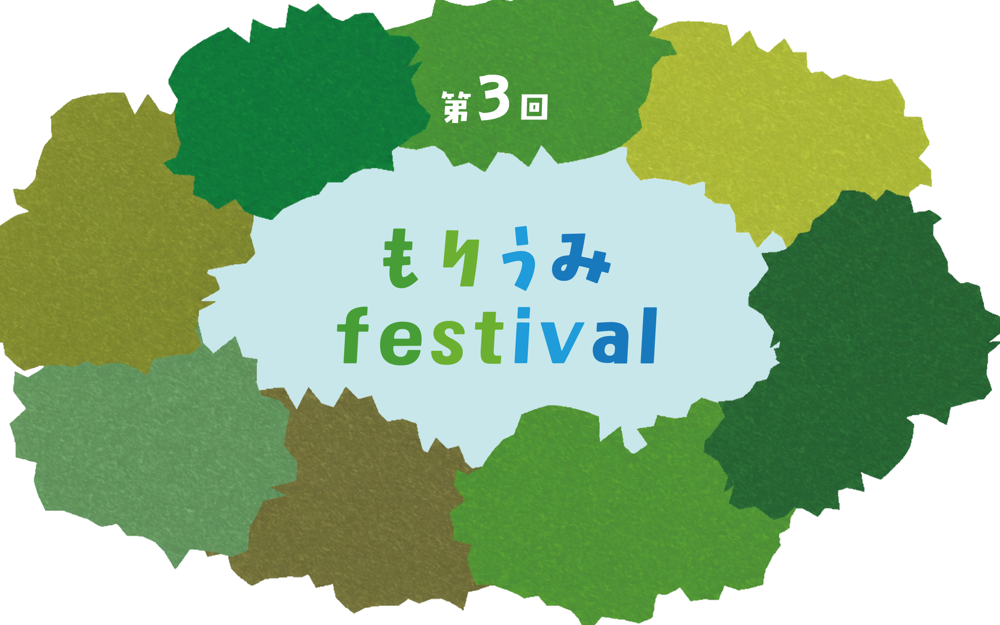
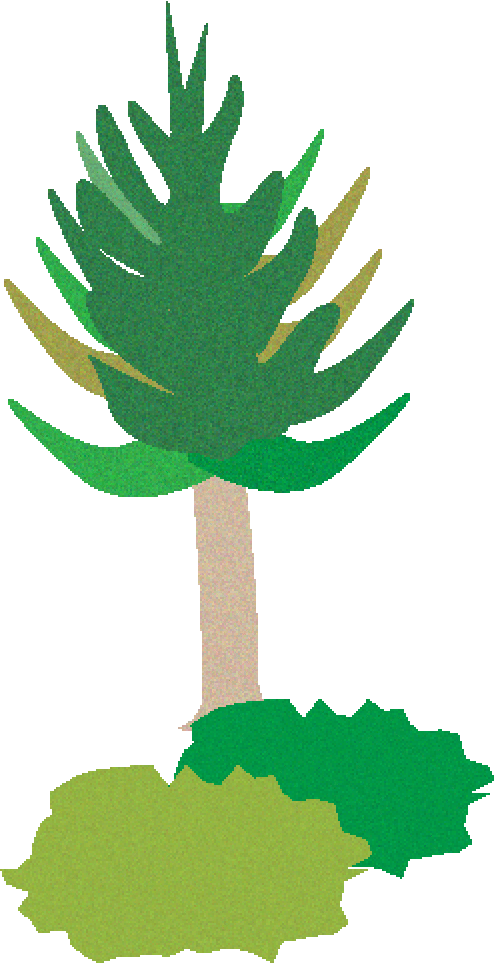
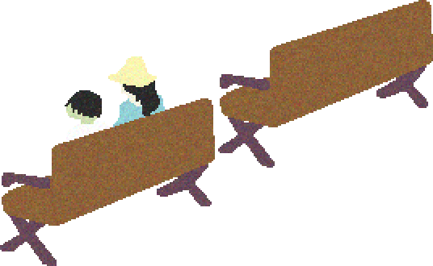
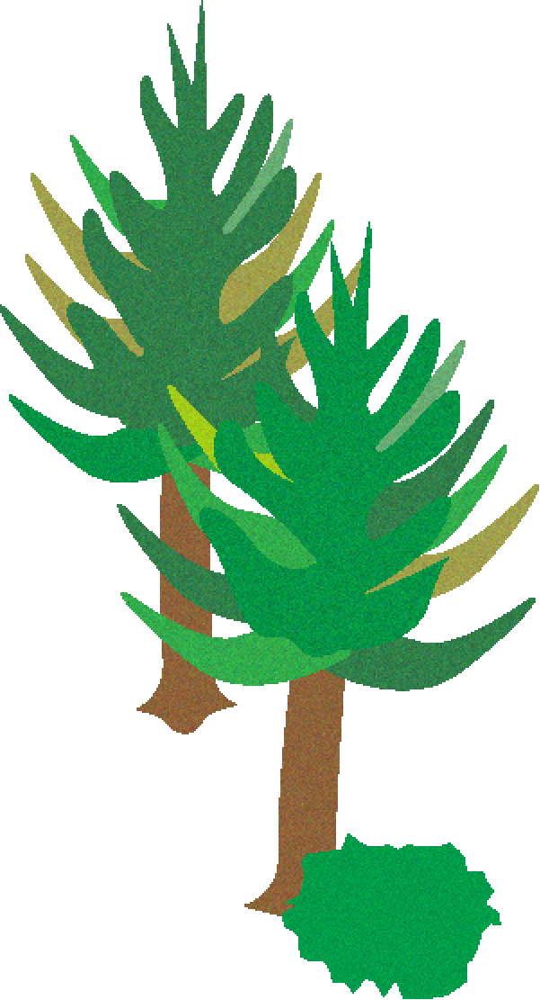
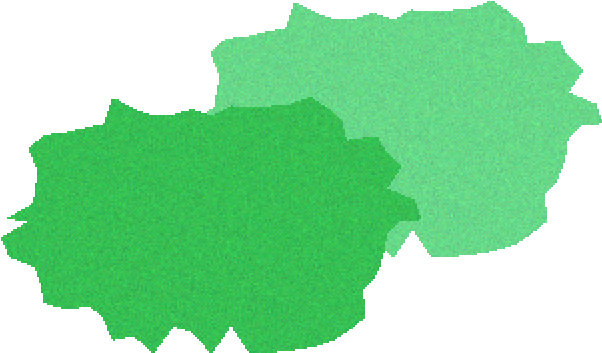
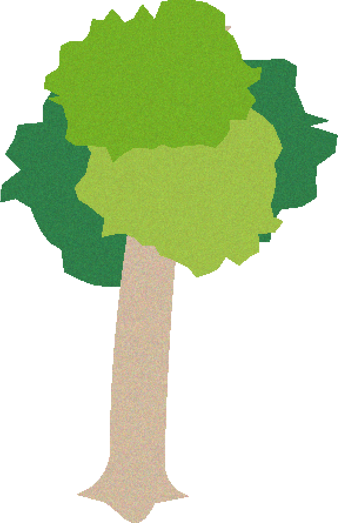
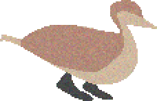

スペシャルパートナー






第3回もりうみfestivalのテーマ
「森と海の繋がり」
森と海は水の循環と人の交流によって
繋がっています。
私たちが日々接している天竜川には森を育んでくれている、
里を守ってくれている、
海を大切にしている誰かがいます。
森や里や川や海が実り豊で安全にふれあえる地域であり続けるために。
森の役割や海の恩恵、
私たちがしらない森と海のあれこれを一緒にたのしく学んでみませんか？

インスタグラムもご覧ください






「天竜の森」林業体験
指導・厳格安全管理のもと10mほどの木を伐採する体験をします。地響きがすごいです。
さらに間伐材を一定の長さに切り分ける「玉切り」、チェーンソー体験も行います。

脱炭素ゲーム
ゼロカーボンをテーマとしたカードゲームで「脱炭素」について楽しく学びます。
公認ファシリテーターによるゲーム形式で、脱炭素社会への移行について理解を深めます。

「浜名湖」
アマモ植栽体験
浜名湖の現役漁師さんから浜名湖の今と昔の違いを伺いながらアマモ種床を作ったり、船で種床を植栽に行きます。
アマモ（植物）が浜名湖の生態系にどのように影響しているのか？なぜアマモが増えることで気候変動対策になるのか?などを学びます。


特別ホテルディナービュッフェ
地域の食材を使った料理を、好きなモノを好きなだけ食べて大満足 大人はお酒、子供はソフトドリンク飲み放題付！

「うなぎがつなぐ森川海」セミナー開催
京都大学名誉教授であり、森里海の第一人者田中克教授による「うなぎがつなぐ森川海」をテーマに大人も子供も楽しめるセミナーを開催。 すべてのプログラムに参加された方には「もりうみfestival参加者限定オリジナルグッズ」をプレゼント
詳しくみる


